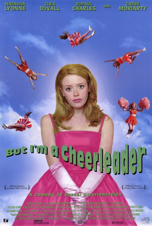

Jamie Babbit
1999
85 minutes
This sits in another mild blind spot in your film viewing experience. It's one of those films that you were never avoiding, but you never actively sought it out since it seemed like something that would be put in front of you to watch soon enough whether you liked it or not. You certainly have enough gay friends and hang out in enough gay spaces for that to be the case. It stars Natasha Lyonne, of course, whom you've long had a bit of a crush on. RuPaul appears in a minor role, and of course you have been a huge fan of Drag Race since the end of its fourth season. Somehow this never got played while hanging at anyone's house for the holidays or at a bar or any other moment you'd normally watch such fare with little objection. You've been without this for long enough and finally have an opportunity to watch it thanks to the magic of Kanopy!
Kanopy is a streaming service that works with your library card. They have thousands of movies on tap, from first run flicks fresh from the theater to old beloved classics and films for the whole family! Simply go to the Kanopy interface, find your local library, and enter your library card number into the convenient interface when prompted. Within minutes you'll be browsing a variety of films you can watch for free on a number of different devices, from your laptop to your cell phone to your home entertainment system. The system runs on virtual "tickets". You get up to thirty tickets per month per library card (depending on your library's subscription) to stream your favorite films. Most films cost two tickets, so in a household with two library cards you and your partner can watch a different film every night for free in the comfort of your own home. And there are hundreds of educational and family-friendly titles that are free for streaming all the time and cost no tickets! No late fees, no drop boxes, no hidden fees, no inconvenience. And for a limited time if you enter the code CYOF then you can get an additional ten tickets your first month!
Or you're going to watch this on Tubi. You can't remember which. Tubi has ads every ten or fifteen minutes, but sometimes they glitch out if you're watching on your laptop for an ad-free experience. Tubi and Kanopy both have a lot of the same shit because it's basically free content. It's up to you whether you'd rather watch trashy ads every ten minutes or fiddle around with your library card and managing ticket rationing.
In any case, this is going to be available free on your phone. You're going to watch most of this while waiting to watch a free afternoon classical music concert at the local music school in your neighborhood, which is a renowned institution in the tier just under Juilliard that attracts musical talents from all over the world. They put on concerts all the time and you've resolved to try to go to more of them. You're not sure what today's concert is, but you showed up for it half an hour early to give yourself plenty of time. When you arrived to the concert, there was no one else waiting in the hall outside the concert space. You found this suspicious, and when you looked it up on your phone you found that you misread the time and you showed up nearly ninety minutes early for the show, with seventy-five more minutes to go before seating. That's enough time to get started watching this film on your phone.
It's a cute movie. It checks all the boxes you expect it to check. Your friends have all seen this and now you have one more reference to get when jokes are made about it and the film is quoted or whatever. Parts of the film remind you of your poor closeted friends and their families from back when you were in middle school and high school.
When the time for the concert approaches, ominous things start to pile up. You start noticing a lot of children with musical instruments approaching the room. At first you write this off, but eventually when you are ushered into the room and take your seat, you discover that you're at a children's concert with elementary students that was part of some enrichment series. You didn't read the concert notice closely enough and you are going to spend the next hour and a half listening to some cello newbies playing such classics as "Hot Cross Buns".
Your adventure has come to an end.
It's harrowing, but ultimately this was probably good for you. Pay more attention next time, dipshit. At least you were able to make the most of some downtime.
Time to choose something different: